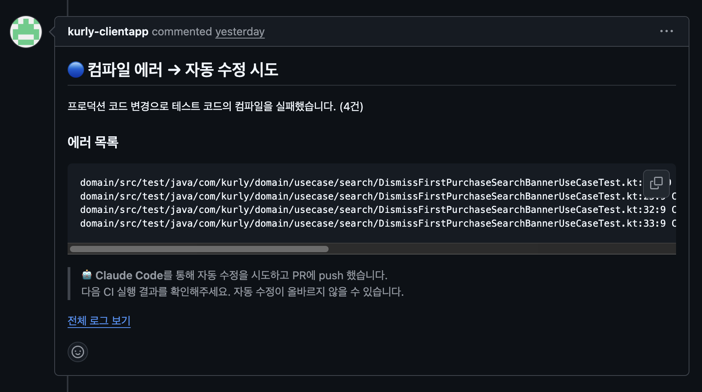
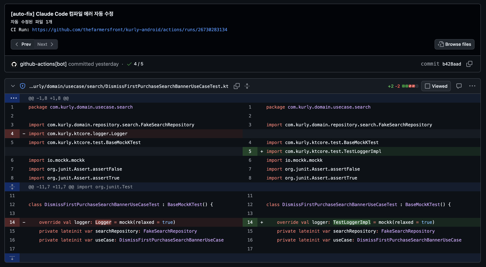

AI에게 맡겼더니, AI가 코드를 못 읽었다
AI에게 컴파일 에러 수정을 맡기는 가장 자연스러운 방법은 무엇일까. 에러 로그를 API로 보내고, 수정된 코드 조각을 돌려받아 그대로 붙여넣는 것이다. 우리도 그렇게 시작했다. Gemini API에 에러와 PR diff를 보내고, search/replace 쌍을 JSON으로 받아 파일에 치환했다.
그런데 이 구조에는 처음부터 균열이 있었다. 패치를 만드는 AI가 정작 수정해야 할 코드를 읽지 못한다는 점이다. AI는 PR diff라는 좁은 창으로만 코드를 봤고, 그 너머의 실제 시그니처는 추측해야 했다. 추측이 빗나가면 search 텍스트가 파일과 일치하지 않아 패치는 조용히 버려졌다.
이 글은 그 균열을 따라, CI의 테스트 컴파일 에러 자동 수정 파이프라인을 Gemini API에서 Claude Code CLI로 재설계한 기록이다. 핵심은 단순한 모델 교체가 아니다. "패치를 반환하는 API"에서 "코드베이스를 직접 읽고 편집하는 에이전트"로, 자동 수정의 작동 방식 자체를 바꾼 이야기다.
먼저 도착지를 보자. 지금 우리 CI는 테스트 컴파일이 깨지면 이런 코멘트를 남기고, 곧바로 고친 커밋을 PR에 push 한다.

이 코멘트 한 장에 이 글의 설계 의도가 모두 담겨 있다. 어떤 에러를 잡는지, 무엇을 수정하고 무엇은 절대 건드리지 않는지, 그리고 왜 마지막 줄에 "올바르지 않을 수 있습니다"라는 단서를 붙였는지. 차례로 풀어보자.
출발점: Gemini 기반 자동 수정
이 자동 수정 기능은 이전 글에서 소개한 CI 빌드 최적화 작업의 일부로 처음 도입했다.[1] 당시 목표는 명확했다. 프로덕션 코드를 고치면서 그에 딸린 테스트 코드의 시그니처를 함께 못 고쳐 CI가 깨지는 일이 잦았고, 이 반복 작업을 사람이 매번 손으로 메우고 있었다. 그래서 CI가 컴파일 에러를 감지하면 AI가 테스트 코드를 고쳐 다시 push 하도록 만들었다.
구조는 이랬다. 실패 로그에서 컴파일 에러(e: 라인)를 추려 PR diff와 함께 Gemini API로 보내고, 응답으로 받은 수정 패치를 파일에 적용했다. 패치 포맷은 파일별 search/replace 배열이었다.
# Gemini가 반환한 /tmp/gemini-fixes.json (예시)
[
{
"file": "domain/src/test/.../ProductUseCaseTest.kt",
"replacements": [
{
"search": "GetProductUseCase(repository)",
"replace": "GetProductUseCase(repository, dispatcher)"
}
]
}
]적용은 Python으로 했다. JSON을 읽어 각 파일에서 search 문자열을 찾아 replace로 치환하는, 단순 명료한 로직이다.
for fix in fixes:
content = open(fix['file']).read()
for r in fix['replacements']:
if r['search'] in content:
content = content.replace(r['search'], r['replace'])
else:
print(f"Search text not found in {fix['file']}") # ← 여기가 문제였다오해를 피하기 위해 분명히 해두면, 이 방식은 잘 동작한 경우도 많았다. 생성자에 인자가 하나 추가된 정도의 단순한 변경이라면 Gemini는 정확한 패치를 만들어냈고, CI는 사람 손 없이 초록불로 돌아왔다. 도입 자체의 가치는 충분히 입증됐다.
문제는 마지막 else 가지에 있었다. search 문자열이 파일과 한 글자라도 어긋나면 치환은 일어나지 않는다. 그리고 이 어긋남은 생각보다 자주 발생했다. Gemini는 PR diff에 찍힌 몇 줄만 보고 패치를 만들 뿐, 실제 테스트 파일의 현재 모습도, 시그니처가 바뀐 프로덕션 코드의 실제 정의도 읽지 못했기 때문이다. import 줄 하나, 들여쓰기, 함수 호출의 줄바꿈 위치 — 추측이 틀어질 여지는 도처에 있었다.
컴파일 에러 수정은 본질적으로 "지금 코드가 어떻게 생겼는가"를 읽어야 가능한 작업이다. 코드를 못 읽는 패치 생성기에게 이 일은 구조적으로 버거웠다.
왜 에이전트인가
그래서 우리가 바꾼 것은 모델이 아니라 패러다임이었다. "에러를 주면 패치를 반환하는 API"를 "코드베이스를 탐색하며 직접 파일을 고치는 에이전트"로 교체했다. Claude Code CLI는 바로 그 에이전트형 도구다.
에러 + PR diff
↓
Gemini API
↓
search/replace JSON
↓
텍스트 치환 (추측 기반)
↓
"Search text not found" ✗에러
↓
Claude Code CLI
↓
Read 테스트 + 프로덕션 코드
↓
실제 시그니처 확인 후 Edit
↓
컴파일 통과 ✓차이는 "코드를 읽을 수 있는가"에서 갈린다. 에이전트는 Read로 깨진 테스트 파일을 열고, Grep·Glob으로 대응하는 프로덕션 코드를 찾아 현재의 정확한 시그니처를 확인한 뒤 Edit한다. 추측할 필요가 없으니 "텍스트가 안 맞아 패치가 버려지는" 실패 모드 자체가 사라진다.
전환을 결정한 이유는 두 가지였다.
- 에이전트의 코드 인지 — 컴파일 에러 수정은 현재 시그니처를 읽어야 하는 작업이다. 코드를 직접 읽고 고치는 도구가 이 문제에 구조적으로 더 맞았다.
- 팀 도구의 일관성 — 팀은 이미 로컬 개발에서 Claude Code를 쓰고 있었다. CI의 자동 수정도 같은 도구로 통일하면, 로컬에서 검증한 프롬프트와 도구 권한을 그대로 파이프라인에 옮길 수 있다.
새 워크플로우 설계
이제 본론이다. 실패 유형을 분류하는 앞단(컴파일 에러 / 테스트 실패 / 빌드 에러)은 그대로 두고, 컴파일 에러일 때 동작하는 자동 수정 단계만 다시 설계했다. 큰 흐름은 네 단계다.
① 환경 준비 Node.js 설치 → Claude Code CLI 설치
② PR 브랜치 checkout 에이전트가 PR의 실제 소스를 읽도록
③ 에이전트 실행 claude -p 비대화형 모드로 에러를 넘겨 직접 수정
④ 검증 후 commit & push 테스트 파일만 변경됐는지 확인하고 push
먼저 GitHub Actions 잡에 쓰기 권한을 부여하고, Node 위에 Claude Code CLI를 설치한다. 인증은 API 키가 아니라 claude setup-token으로 발급한 장수명 OAuth 토큰을 시크릿(CLAUDE_CODE_OAUTH_TOKEN)으로 주입한다. CI와 스크립트를 위해 공식적으로 제공되는 인증 방식이다.[2]
# 잡 권한: 봇이 PR 브랜치에 커밋을 push 하려면 필요
permissions:
contents: write
pull-requests: write
# Node.js 설치 후 Claude Code CLI 설치
- uses: actions/setup-node@v4
with:
node-version: '20'
- run: npm install -g @anthropic-ai/claude-code@latest핵심은 에이전트 호출이다. PR 브랜치로 checkout 한 다음, 추려둔 에러를 프롬프트에 끼워 claude -p(print 모드, 비대화형)로 실행한다. --allowedTools로 허용할 도구를, --max-turns로 에이전트의 작업 턴 상한을 명시한다.[3]
# PR 브랜치 checkout 후 에이전트 실행
ERRORS=$(cat /tmp/error-details.txt)
cat <<PROMPT_EOF | claude -p \
--model claude-sonnet-4-6 \
--max-turns 50 \
--allowedTools 'Read,Edit,Write,Glob,Grep'
Fix the following Kotlin compile errors in test files.
## Compile errors
${ERRORS}
## Instructions
1. For each error, read the affected test file
2. Read the corresponding production code to find the correct current signatures
3. Edit the test file to fix the compile error
4. Do NOT modify any production code — only test files under */test/* paths
5. Do NOT add comments or documentation
6. When adding a new type, also add its import
PROMPT_EOF이 프롬프트가 새 설계의 정수다. 1·2번은 에이전트에게 고치기 전에 읽으라고 지시한다 — 깨진 테스트 파일을 읽고, 그에 대응하는 프로덕션 코드를 읽어 현재 시그니처를 확인하라는 것이다. Gemini가 못 했던 바로 그 일이다. 4번은 자동 수정의 안전 경계를 못 박는다. 프로덕션 코드는 읽되, 고치는 것은 테스트 파일뿐이다. 자동 수정이 프로덕션 로직을 건드려 버그를 덮어버리는 사고를 원천 차단한다.
허용 도구를 Read,Edit,Write,Glob,Grep으로 제한한 것도 같은 맥락이다. Bash 같은 실행 권한은 주지 않는다. 에이전트가 할 수 있는 일은 파일을 읽고 찾고 고치는 것뿐, CI 러너에서 임의의 명령을 돌릴 수는 없다.
그래서 에이전트가 실제로 만드는 변경은 이런 모습이다. 앞서 Gemini가 search/replace로 추측하려 했던 바로 그 케이스 — 프로덕션 생성자에 dispatcher 인자가 추가되어 테스트 호출부가 깨진 상황을 보자.
// 프로덕션 시그니처 변경으로 깨진 호출
private val useCase =
GetProductUseCase(repository)// 프로덕션 생성자를 읽고 인자 추가
private val useCase =
GetProductUseCase(repository, dispatcher)차이는 미묘하지만 결정적이다. Gemini는 추가할 인자가 dispatcher라는 사실을 PR diff에서 추측해야 했다. 에이전트는 추측하지 않는다. GetProductUseCase의 프로덕션 생성자를 Grep으로 찾아 직접 읽고, 거기 적힌 현재 파라미터를 그대로 테스트에 맞춘다. 같은 한 줄을 고치더라도, 그 한 줄에 도달하는 경로가 다르다.
세 가지 설계 결정
큰 흐름 위에, 운영에서 부딪힐 상황을 막기 위한 세 가지 결정을 얹었다.
① 프로덕션 코드 변경 가드 — 프롬프트만으로는 부족하다
프롬프트 4번에서 "프로덕션 코드를 고치지 말라"고 지시했지만, 그것은 모델과의 약속일 뿐 보장이 아니다. 그래서 push 직전에 코드 레벨 가드를 한 겹 더 둔다. 변경된 파일 중 테스트 경로가 아닌 것이 있으면 되돌린다.
# 테스트 경로 밖의 변경은 강제로 되돌린다 (이중 안전장치)
PROD_CHANGES=$(git diff --name-only | grep -v '/test/' | grep -v '/androidTest/' || true)
if [ -n "$PROD_CHANGES" ]; then
echo "::warning::프로덕션 코드 변경 감지 — 되돌림: ${PROD_CHANGES}"
echo "$PROD_CHANGES" | xargs git checkout --
fi프롬프트(예방)와 git checkout(차단)의 이중 구조다. 자동 수정이 신뢰를 얻으려면, "AI가 알아서 잘하겠지"가 아니라 "잘못해도 막힌다"가 설계에 박혀 있어야 한다.
② 무한 루프 방지 — 임계값을 올린 이유
자동 수정이 push 하면 CI가 다시 돌고, 또 컴파일 에러가 나면 또 자동 수정이 돈다. 이 꼬리물기를 막아야 한다. 기존 Gemini 방식은 "최근 3개 커밋 중 [auto-fix]가 하나라도 있으면 중단"이었다. 한 번 자동 수정하면 사실상 다음 시도가 막히는, 보수적인 규칙이다.
에이전트 방식에서는 이 임계값을 올렸다. 에이전트는 한 번에 여러 파일의 에러를 해결하지만, 한 라운드에서 다 못 잡고 다음 라운드에 나머지를 잡는 경우도 정상 흐름에 들어온다. 그래서 "최근 10개 커밋 중 [auto-fix]가 5개 이상이면 중단"으로 바꿔, 정당한 연속 수정은 허용하되 폭주는 막도록 했다.
# 최근 3커밋에 [auto-fix] 있으면 중단
grep -q '\[auto-fix\]'# 최근 10커밋 중 [auto-fix] 5회↑ 중단
jq '[.[] | select(... test("^\\[auto-fix\\]"))] | length'
[ "$AUTO_FIX_COUNT" -ge 5 ]③ 에러 컨텍스트를 넓혔다
Gemini 방식은 패치 생성을 위해 에러를 20줄로 잘라 넘겼다. 에이전트는 에러 목록을 단서 삼아 직접 코드를 탐색하므로, 더 많은 에러를 한눈에 주는 편이 유리하다. 그래서 에이전트에 넘기는 에러를 50줄로 늘리고, PR 코멘트에 표시할 전체 건수는 별도로 집계하도록 분리했다. 위 코멘트의 "(4건)"이 그 집계값이다.
실제로 돌려보니
이 워크플로우는 현재 운영 중이고, 실제로 PR을 고치고 있다. 글 첫머리의 코멘트가 바로 그 결과물이다. 그 케이스의 흐름을 따라가 보자.
검색 도메인의 프로덕션 코드(DismissFirstPurchaseSearch… 관련 UseCase)가 변경되면서, 그에 딸린 테스트 4건의 컴파일이 깨졌다. CI는 실패 로그에서 이를 COMPILE_ERROR로 분류하고 자동 수정 단계를 깨웠다. 에이전트는 PR 브랜치를 checkout 한 뒤 깨진 테스트 파일들과 바뀐 프로덕션 코드를 읽고, 테스트의 호출부를 새 시그니처에 맞춰 고쳤다. 가드를 통과한 변경은 [auto-fix] Claude Code 컴파일 에러 자동 수정 커밋으로 PR에 push 됐고, 위 코멘트가 남았다.

[auto-fix] 커밋(b428aad)의 실제 diff. 프로덕션에서 바뀐 시그니처에 맞춰 Logger → TestLoggerImpl 로 호출부를 고쳤다.그렇다면 개발자에게 알림(Slack)은 언제 가는가. 자동 수정이 적용된 경우에는 알림을 보내지 않는다. push가 새 CI 실행을 트리거하므로, 결과는 그 재실행이 판정하기 때문이다. 재실행이 통과하면 사람을 부를 일이 없고, 재실행마저 실패하면 그때 알림이 나간다. 자동 수정은 사람의 일을 줄이되, 끝내 못 고치는 상황을 조용히 숨기지는 않는다.
이번 변경 자체는 워크플로우 파일 하나에 담겼다. 규모는 작지만, 그 안에서 자동 수정의 작동 방식이 통째로 바뀌었다.
| 항목 | Before (Gemini) | After (Claude Code) |
|---|---|---|
| 코드 인지 | PR diff만 (추측) | Read/Grep로 실제 코드 |
| 적용 방식 | 텍스트 search/replace | 에이전트 직접 Edit |
| 대표 실패 모드 | search text not found | 해소 |
| 안전장치 | — | 프롬프트 + git checkout 가드 |
| 변경 규모 | workflow 1개 파일, +70 / −82줄 (순 −12줄) | |
한계와 적용 가이드
이 자동 수정에는 분명한 경계가 있다. 솔직하게 적어둔다.
- 컴파일 에러만 고친다. 테스트 로직이 틀려서 나는 실패(assertion 실패)는 대상이 아니다. 시그니처 불일치 같은 "기계적으로 따라가야 하는" 수정에 한정된다.
- 자동 수정이 항상 옳지는 않다. 코멘트 마지막 줄("올바르지 않을 수 있습니다")은 빈말이 아니다. 에이전트의 수정도 리뷰 대상이며, 최종 판단은 사람이 한다. 가드는 사고를 막을 뿐 정합성까지 보장하지 않는다.
- 턴·비용 상한이 있다.
--max-turns에 걸리면 에이전트는 에러로 종료한다. 그래서 이 단계는continue-on-error: true로 두어, 자동 수정이 실패해도 CI 파이프라인 자체는 정상적으로 실패 알림까지 이어지게 했다.
비슷한 자동 수정을 CI에 심으려는 분들을 위해, 이 설계에서 양보하지 않은 지점을 정리한다.
- 1고치기 전에 읽게 하라. 패치를 받는 게 아니라 코드를 읽고 고치는 에이전트형 도구를 쓴다. 컴파일 에러는 현재 시그니처를 읽어야 풀린다.
- 2쓰기 경계를 코드로 막아라. 프롬프트의 "하지 마라"는 약속일 뿐이다. 테스트 경로 밖 변경은
git checkout으로 되돌리는 가드를 둔다. - 3도구 권한을 최소화하라.
Read,Edit,Write,Glob,Grep만 허용하고Bash는 주지 않는다. - 4루프를 막아라.
[auto-fix]커밋 횟수로 폭주를 차단하되, 정당한 연속 수정은 허용하는 임계값을 잡는다. - 5실패를 삼키지 마라.
continue-on-error로 자동 수정 실패가 파이프라인을 멈추지 않게 하고, 끝내 못 고치면 사람에게 알린다.
코드 생성은 더 이상 병목이 아니다. 진짜 병목은 그 결과가 맞는지 검증하는 일이다. 이 워크플로우의 목표도 "AI가 사람을 대신해 코드를 쓴다"가 아니라, "기계적인 수정을 AI에게 넘기고 사람은 검증에 집중한다"에 있다. CI가 스스로 깨진 테스트를 고쳐 두면, 개발자는 빈 화면에서 시작하는 대신 고쳐진 diff를 검토하는 데서 시작한다. 그 한 칸의 이동이 이 설계의 전부다.
- CI 테스트 컴파일 에러 자동 수정을 Gemini API → Claude Code CLI로 재설계했다.
- "패치를 반환하는 API"는 코드를 못 읽어
search text not found로 실패했다. 에이전트는 코드를 직접 읽고 고친다. claude -p비대화형 + 허용 도구 제한 + 프롬프트/git checkout이중 가드 + 루프 방지로 설계했다.- 현재 운영 중이며, 프로덕션은 건드리지 않고 테스트만 고쳐 PR에 push 한다. 최종 판단은 사람이 한다.